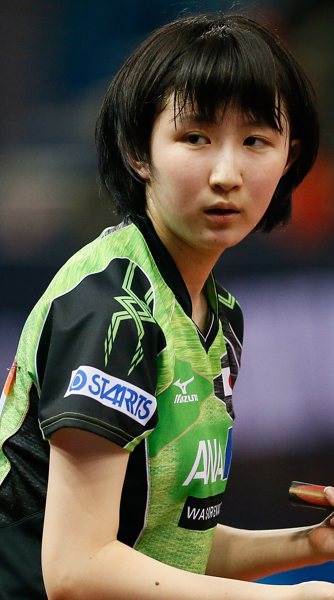

ラケット競技
•
卓球 / 女子シングルス / 女子団体
はやた ひな
早田 ひな
Hina Hayata
🏢 所属: 日本生命
🏅 パリ五輪シングルス銅メダル🏅 パリ五輪団体銀メダル🏅 全日本選手権3冠
左腕から放たれる豪快なパワードライブ！不屈の闘志で世界女王の座へと迫るサウスポー
愛知・名古屋2026 今大会最終結果
女子シングルス 準決勝進出決定（銅以上確定）🔥
準々決勝: 4-1 快勝（明日 準決勝へ）
【最新】準々決勝で圧巻のフォアドライブを連発し4-1で快勝。見事にベスト4入りを果たしメダルを確定させた。明日行われる準決勝で悲願の頂点を目指す。
🎬 最後のシーン（決定的瞬間・ハイライト）
相手のドライブをカウンターで打ち抜き、拳を握りしめて笑顔を見せた感動の勝利シーン。
▶️ 【YouTube】準々決勝 豪快なフォアハンドスマッシュで準決勝進出を決めた瞬間 を見る
📊 公式トーナメント表・競技記録速報（Draw/Results）
女子シングルス 準決勝〜決勝ブラケット＆詳細スタッツ
📊 【WTT (World Table Tennis) / 日本卓球協会】WTT公式 女子トーナメント表 を見る ➔
経歴・これまでの歩み
4歳で卓球を始め、希望が丘高校を経て日本生命へ。伊藤美誠、平野美宇とともに「黄金世代」として切磋琢磨。恵まれた長身から繰り出される豪快なフォアドライブを磨き上げ、国内選考レースをぶっちぎりで1位通過。パリ五輪では左手首の激痛を抱えながら見事に銅メダルを獲得した。
主要大会ハイライト戦績
2024年
パリオリンピック
女子シングルス 銅メダル / 女子団体 銀メダル
2023年
世界卓球ダーバン
女子シングルス 銅メダル（中国の王芸迪を撃破）
2023年
杭州アジア大会
女子シングルス 銀メダル
プレイスタイル＆世界を制する武器
男子顔負けの回転量と威力を誇るフォアハンド両ハンドドライブ。相手の球威を利用するだけでなく、自ら打ち抜くパワーと多彩なサービスが強み。
専門家・メディアによる客観的分析・批評
✨
強み・世界トップ水準の評価
男子顔負けの重いボールを打ち込むフォアハンド両ハンドドライブと、左腕の怪我を抱えながらも戦い抜いた並外れた精神的タフネス。
出典・ソース:
水谷隼氏（五輪金メダリスト） / テレビ東京卓球NEWS
⚠️
課題・懸念される客観的事実
左手首や腕の慢性的な疲労・負傷リスクのコントロールと、長時間の激闘が続くトーナメントでのフィジカル消耗。
出典・ソース:
日刊スポーツ卓球担当記者
愛知・名古屋2026への決意とメッセージ
大会スケジュール＆観戦のツボ
🗓️ 出場予定日程・会場
2026年9月25日〜10月2日（豊田スカイホール）
👀 観戦の注目ポイント
台から離れても打ち勝つ力強いラリーと、最後まで諦めない粘り強いフットワーク。